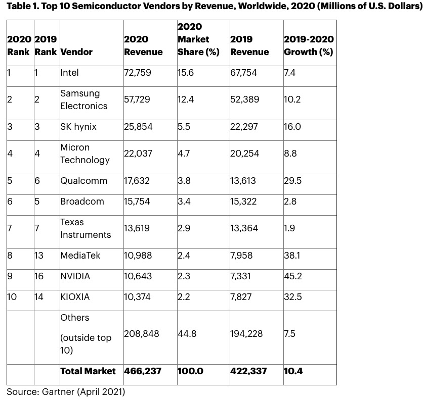
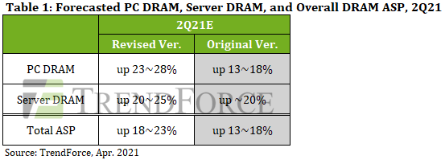
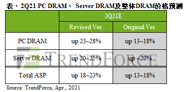

Market Trends
Gartner Says Worldwide Semiconductor Revenue Grew 10.4% in 2020(Gartner 2021-04-12)
Worldwide semiconductor revenue totaled $466.2 billion in 2020, an increase of 10.4% from 2019, according to final results by Gartner, Inc.
……
Memory, which accounted for 26.7% of semiconductor sales in 2020, was the second best-performing device category, experiencing a 13.5% revenue increase. “Memory benefited from the key trend in 2020 — the shift to home working and learning — which fueled increased server build from hyperscale vendors to satisfy online working and entertainment, as well as a surge in PCs and ultramobiles,” said Mr. Norwood.
Within memory, NAND flash experienced the best performance with revenue growth of 25.2% due to a shortage in 1H20. “In 2021 both NAND flash and DRAM will be in shortage, sending pricing higher though the year and revenues rocketing by around 25%” said Mr. Norwood. “This sets memory focused Samsung up with a good chance of recapturing the top spot in the semiconductor market from Intel in 2021.”
……

DRAM Prices Projected to Rise by 18-23% QoQ in 2Q21 Owing to Peak Season Demand(TrendForce 2021-04-20)
TrendForce’s investigations find that DRAM suppliers and major PC OEMs are currently participating in the critical period of negotiating with each other over contract prices for 2Q21. Although these negotiations have yet to be finalized, the ASP of mainstream DDR4 1Gx8 2666Mbps modules has already increased by nearly 25% QoQ as of now, according to data on ongoing transactions. This represents a higher price hike than TrendForce’s prior forecast of “nearly 20%”. On the other hand, prices are likewise rising across various DRAM product categories in 2Q21, including DDR3/4 specialty DRAM, mobile DRAM, graphics DRAM, and in particular server DRAM, which is highly related to PC DRAM and is therefore also undergoing a higher price hike than previously expected. TrendForce is therefore revising up its forecast of overall DRAM price hike for 2Q21 from 13-18% QoQ to 18-23% QoQ instead. However, the actual increase in prices of various DRAM product categories will depend on the production capacities allocated to the respective products by DRAM suppliers.
PC DRAM prices are now expected to undergo a 23-28% QoQ growth in 2Q21 due to the increased production of notebook computers
…………
DRAM Suppliers will enjoy increased bargaining power in price negotiations as server DRAM prices are expected to increase by 20-25% QoQ in 2Q21
…………

旺季备货需求增温，第二季整体DRAM季涨幅扩大至18~23%(集邦咨询 2021-04-20)
根据TrendForce集邦咨询研究显示，目前正值DRAM原厂与各大PC OEMs议定2021年第二季合约价的关键时期。虽然合约价议定尚未完成，但根据现在已经拟定的交易当中，以主流模组DDR4 1Gx8 2666Mbps均价来看，其季涨幅已接近25%，已超出原先TrendForce集邦咨询近两成的预期。另与该产品别高度相关的Server DRAM价格涨幅也同步扩大，加上原先已预期第二季Specialty DRAM DDR3、DDR4、mobile DRAM与graphics DRAM价格都将高涨，预估第二季整体DRAM均价涨幅将自原先的13~18%，上调至18~23%，而实际涨幅依照DRAM原厂产品比重不同也有差异。
受笔电生产总量增加影响，第二季PC DRAM价格涨幅上调至23~28%
…………
Server DRAM价格涨幅上修至20~25%，原厂议价能力将更强大
…………

Micron Warns About DRAM Memory Shortages, Price Hikes Ahead(ElectronicDesign 2021-04-16)
Micron Technology signaled more pain ahead for the global electronics sector, warning that a shortage of memory chips would last through the end of the year, leading to large price hikes.
With pent-up demand for memory chips, Micron said last month that its quarterly sales are on pace to improve more than 30% year over year to around $7.1 billion in the latest quarter. Over the long term, it is trying to take advantage of smartphones, cars, and other electronics that are integrating more memory than they used to to run artificial intelligence or connect to 5G.
……
More than 70% of Micron’s business in the second quarter came from DRAM memory. Sales in the segment soared 44% year over year to around $4.4 billion
……
Market research firm Trendforce said average DRAM prices increased between 3% and 8% in the first quarter and it anticipates prices to rise between 13% to 18% in the second quarter as demand soars.
……
Samsung, SK Hynix, Micron Accused of Fixing DRAM Prices(Tom’s Hardware 2021-05-06)
Samsung, SK Hynix, and Micron allegedly used their control over the memory market to fix DRAM pricing, accuses a new class-action lawsuit from Hagens Berman.
…………
The firm said in 2018 that “An investigation has revealed that a group of the largest electronics manufacturers that produce dynamic random-access memory (DRAM) may have agreed to collectively raise the price of memory used in mobile phones and computers from 2016-2017, illegally inflating the price paid by consumers.“
…………
It’s not clear what changes Hagens Berman made after the 2018 suit was dismissed, but BusinessKorea reported that the firm filed a followup suit in the same U.S. District Court on May 3, which shows it’s not ready to give up on the case just yet.
Vendor News
美光第二财季营收同比增长三成，多个因素稳定存储芯片市场需求在(全球半导体观察 2021-04-01)
4月1日消息，当地时间3月31日，美光科技公布2021年第二财季财报。
财报显示，美光科技2021年第二财季营收62.4亿美元（约人民币408.8亿），同比增长三成；净利润为11亿美元（约人民币72.0亿），相当于每股98美分。
美光预计第三财季营收69亿美元至73亿美元，超出市场预估的68.5亿美元。
美光科技总裁兼首席执行官Sanjay Mehrotra（梅罗群）表示：“美光第二财季的强劲表现反映了快速改善的市场环境和持续稳健的执行力，我们在DRAM（内存芯片）和NAND（闪存芯片）领域具有技术领先优势，并在整个数据中心等提供新的用户体验和创新水平方面处于有利地位。”
……
Samsung Electronics’ Gap with Competitors in DRAM and NAND Flash Narrowing(BusinessKorea 2021-04-15)
……
Samsung Electronics has maintained its dominance in the global memory (DRAM and NAND) market for 29 years. However, its market share has been on a steady decline in recent years. Although the company’s share in the DRAM market stood at 48 percent in 2016, it had continued to drop for the following five years and fell to 43.1 percent in 2020. It further dropped to 42.1 percent in the fourth quarter of 2020, according to TrendForce.
……
Industry experts say that Samsung Electronics’ technological leadership is weakening as competitors are quickly improving their technologies. Micron is mass-producing 10-nanometer DRAMs, which are equivalent to Samsung Electronics’ products. The U.S. rival is also developing next-generation DRAMs in the low 10-nanometer range using state-of-the-art EUV lithography equipment. Its goal is to produce EUV DRAMs during the first half of 2021.
……
Not only Micron but Taiwan’s Nanya are narrowing its technology gap with Samsung Electronics by speeding up the development of EUV DRAMs. China did not give up localizing memories either.
Samsung Electronics to Start Operating Foundry Line in Pyeongtaek in June(BusinessKorea 2021-04-16)
Samsung Electronics’ new foundry line in Pyeongtaek will go into operation as early as this June. Recently wafers were put into the new production line of Samsung Electronics’ Pyeongtaek Plant 2 (P2).
Pyeongtaek Plant 1 (P1) began volume production in June 2017. Samsung Electronics broke ground for Pyeongtaek P2 in 2018. The new plant began mass-production of third-generation 10-nano LPDDR5 mobile DRAMs, using extreme ultraviolent (EUV) lithography equipment, in the second half of 2020. LPDDR is an abbreviation for low-power double data rate.
In addition to the DRAM line, Pyeongtaek P2 also has a ultra-micro foundry line and a next-generation V-NAND flash line, which are scheduled to start operations in 2021.
……
看好今年DRAM市场前景，南亚科将加速开发10 纳米制程与DDR5(全球半导体观察 2021-04-25)
4月25日消息，据钜亨网报道，南亚科看好今年DRAM市场前景，将加速开发10 纳米制程技术与DDR5 产品，同时规划新厂扩建。
南亚科表示，今年来自智能手机、服务器\数据中心的需求将稳定成长，而供给端的增长幅度有限，综合来看，需求的成长将超过供应端，看好整体产业健康发展。
南亚科董事长吴嘉昭指出，今年预期DRAM 市场售价止跌回升，整体产业可望走出谷底，并迈向成长。南亚科将投入更多的研发资源，加速开发10 纳米级制程技术与DDR5 产品，同时规划新厂扩建，未来将以符合市场需求为目标，逐步增加产出。
………
SK Hynix: No More Reasons for Concern(BusinessKorea 2021-04-29)
SK Hynix posted operating profit of KRW1.32tr (+37.1% QoQ) on sales of KRW8.49tr (+6.6% QoQ) for 1Q21, meeting the FnGuide consensus of KRW1.34tr. For DRAM, the company reported 4% QoQ improvement in both ASP and shipments. NAND earnings also recovered on sharp shipment growth (+21% QoQ), despite a 7% QoQ drop in ASP levels.
In 2Q21, we expect SK Hynix to enjoy steep earnings improvement to sales of KRW9.64tr (+13.4% QoQ) and operating profit of KRW2.38tr (+79.4% QoQ) on overall improvement in ASP levels (DRAM +16% QoQ, NAND +3% QoQ).
……
Key investment points for SK Hynix are: 1) forecasts for steep earnings growth from 1Q21; 2) expectations for record-high earnings in 2022; and 3) potential re-rating following the acquisition of Intel’s NAND flash business.